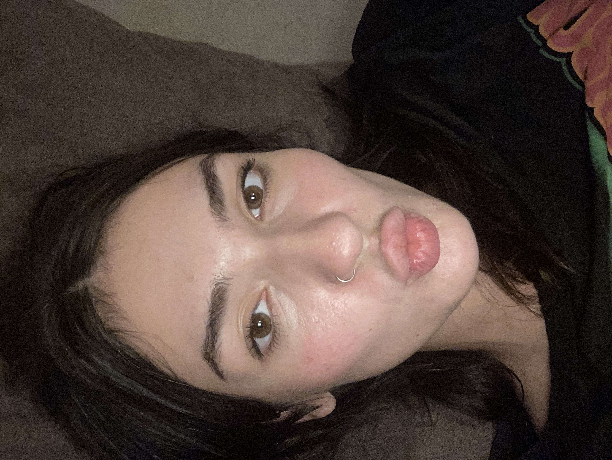

My Resume

Summary
I am a disciplined and focus driven person. I enjoy working in a team as well as independently and I am interested in various humanitarian, social and law related topics.
Education
- First English Language School 2012-2017
- Sofia University 2017-2023
Work experience
- Tour guide 2017-now
Part of 365 association - tour guide at the Free Sofia Tour; The New Sofia Pub Crawl; Tour guide at Balkan Bites Food Tour
- Law Trainee at Georgiev and Petrov Law Firm April 2021-December 2021
Skills
- Presentational Skills
- Communication Skills
- Adaptive
- Team-oriented
Awards,Certifications,Other Achievements
Presented Sofia University in numerous Moot Court Competitions and achieving higher positions in those competitions
Contact me